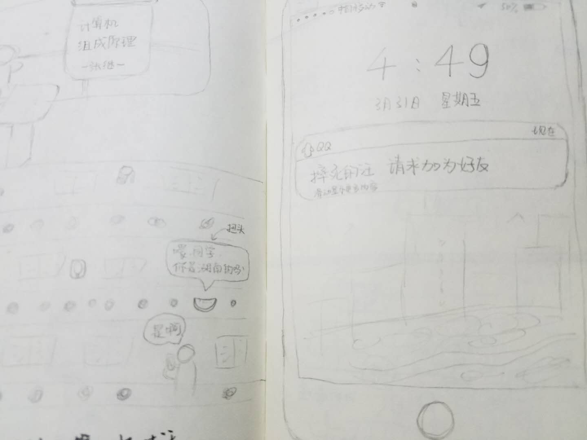
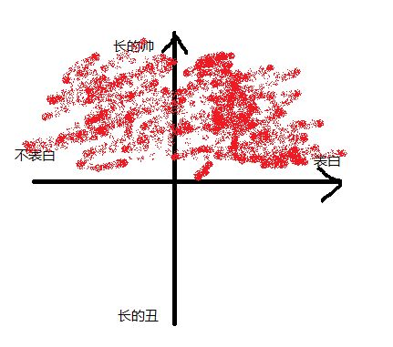
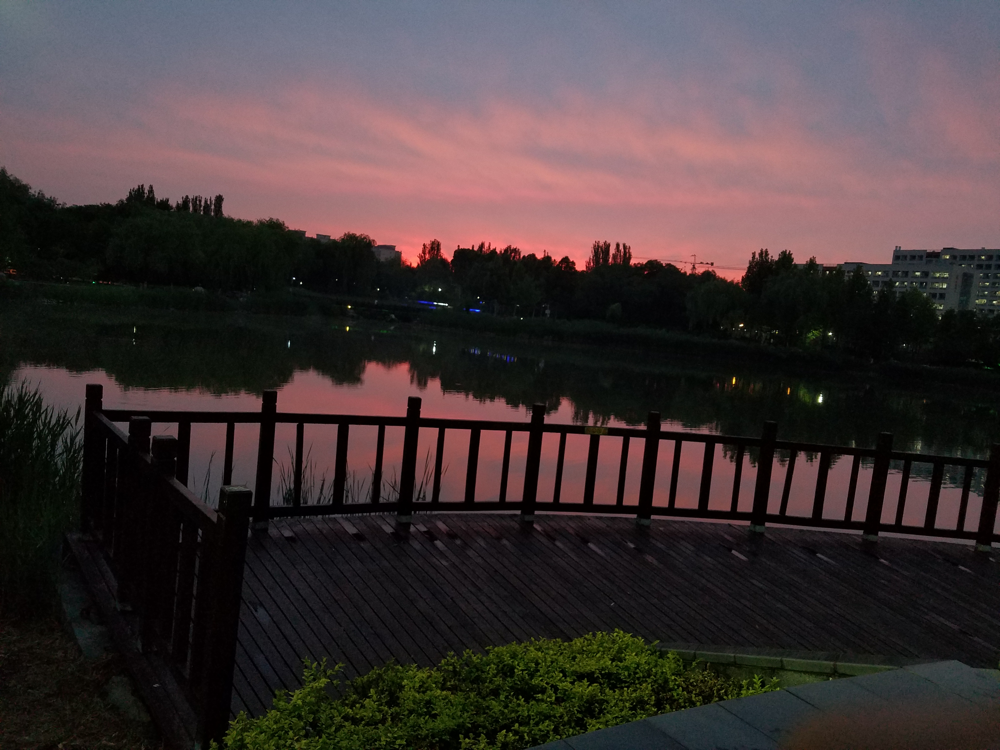
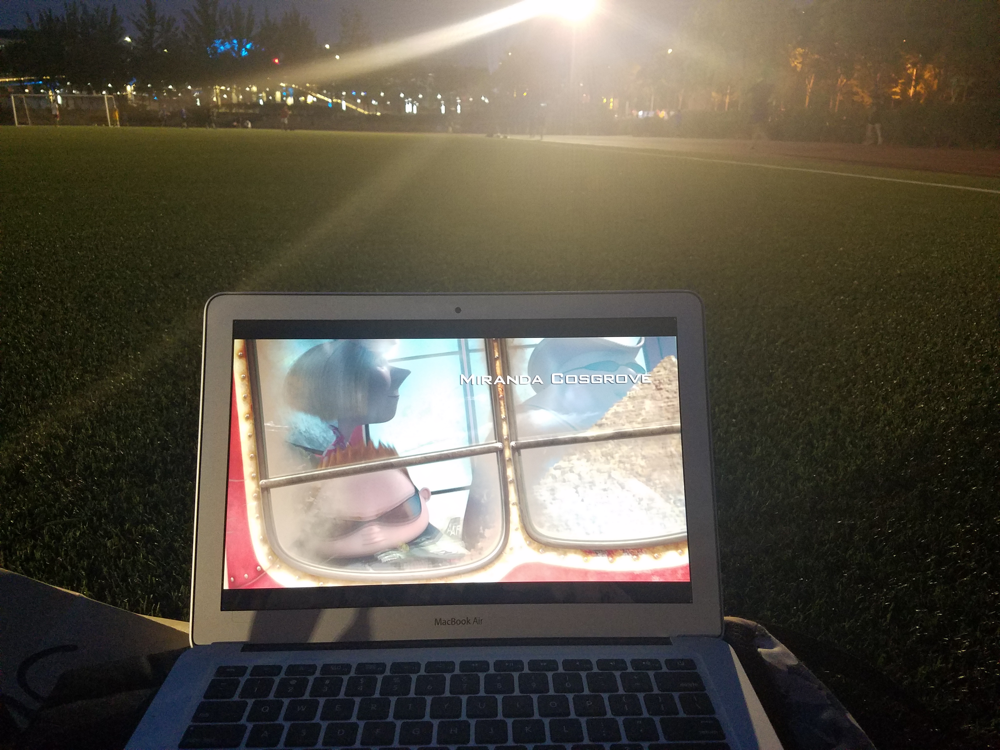
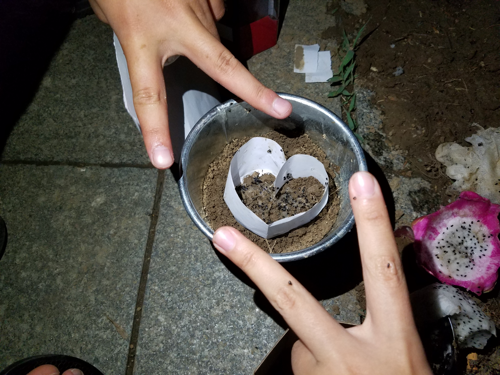
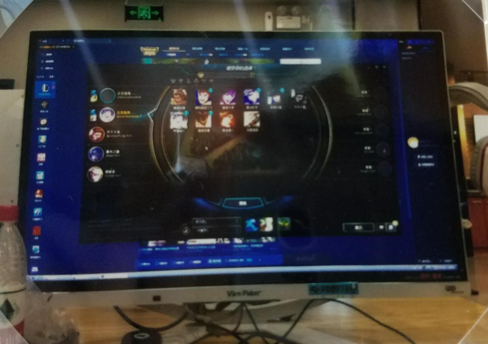
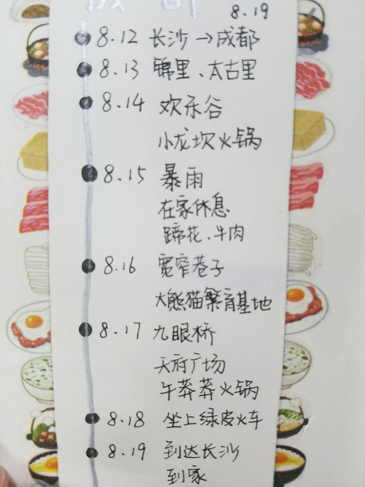

嗨,西瓜,有你的日子过得好快,我们也在一起一年了.
刚开始的认识始于一次偶然的问候,坐在前桌的你突然回头问我是不是湖南人(大概是我的塑普十分明显),后来问了别人才得知就在隔壁班的你竟也是老乡.之后便添加了你的好友.

相互熟悉也是始于一次偶然.没有人报名当人大代表,我就被导员拉去了.大概是需要收集一些同学们反映的问题,然后开会时提出来.想想当时还气的不行,又得浪费打游戏的时间去开一些莫名其妙的会.有天晚上打游戏时,你发了一个意见反馈给我,通过这次聊天,发现两人之间有好多相似的地方,有说不完的话.
后来相互熟悉,也觉得互有感觉,进过深思熟虑,终于决定勇敢的表达自己对你喜欢.当然,我成功了,原因的话,大概就是下图吧

和你在一起后生活也多了很多新奇的体验.我们一起在球场看露天电影,走遍校园里的大道与小巷,一路小跑的追逐晚霞,每晚自习完的一起锻炼,一起种星星,在路边走过看这肥肥跳跳滑稽的走路,当然,最后也带你体验了一下我玩了两年的游戏.最后虽然就在良乡呆了两个月,经历却比之前的两年更为丰富.暑假的成都之行也是十分的开心,带着一个每次出行都会做好计划,把行程安排的十分妥当的你体验了一下随意的旅行.





当然,我们也有经历一段tough time.大三上你交换去了台湾半年,我们就得经历一段好长时间的异地了.还记得一开始你对于那里各种不适应,找房子,遇到一些不善意的人,和棘手的事情.当然,有问题就找老大投诉,我也愿意听,你不开心的时候我都会在一旁安慰你.还好你可爱又明事理,大多时候都可以哄好你.我也曾失去过耐心,表现的很自私,这种时候我是一个糟糕的男朋友.即便如此,你也总是会包容我,你真挚的情感总是能拯救我,always,always.十分感激.除了那一丢丢不好的地方,台湾这种城市对你这样的文艺女孩也算是天堂啦.有各种集市,你喜欢的手账,文具店.充满了生活气息的巷子,道路上有机车飞驰的声音.好可惜没有和你一起在台湾,以后有机会的话就请大导游带我去玩耍啦.
这个学期,我们又在一起啦.当然,大三是比较忙碌的,很多时间也都泡在图书馆了.暑假开始我们也就要一起考研了.总觉得你是一个特别勇敢有梦想的人,为了自己的兴趣,选择跨考.虽然也许会很难,不过我很一直陪你.在图书馆看到你沉浸在自己喜欢的书籍与作业中,也就觉得这一切也都值得.
最后,你有时老是会问我喜欢你的什么,那么,杜致远
我喜欢你坐在单车后搂住我看在我背上的动作.
我喜欢你吃好吃的东西,眯起眼睛的样子,还有双颊塞满食物时,嘴角露出上扬的弧线.
我喜欢你看着窗外跳跳发呆的侧脸.
我喜欢你偶尔听着我放的音乐不自禁摇摆的身体.
我喜欢你遇见摄像头时候摆个姿势,露出的微笑.
我喜欢你就算不懂也陪在旁边和我一起看球的认真.
我喜欢你在我问你带有选择的问题时,你习惯的说出”随你”.
我喜欢你悄悄为我准备的突如其来的惊喜.
我喜欢你不时的在我的书上或者写给我的卡片上,那些鼓励我好好学习的话语.
我喜欢你看自己感兴趣的书时,认真的眼神.
我喜欢你每天的问候”早早”与”晚安”的可爱.
我喜欢你在完成图形学作业之后有些癫狂的庆祝动作.
我喜欢你在北湖教我认那些花草树木的模样.
我喜欢你为我们创作的那些可爱的头像.
我喜欢这样的你.
偶尔翻起生日时你送我的32页的小本本,总有许多感动.很幸运能够遇到这样的你,一直陪伴有些幼稚愚蠢的我.也许以后还会犯错,还会遇到苦难,还得麻烦你多多照顾~
我们这一年
-------------本文结束感谢您的阅读-------------
Donate here!!!